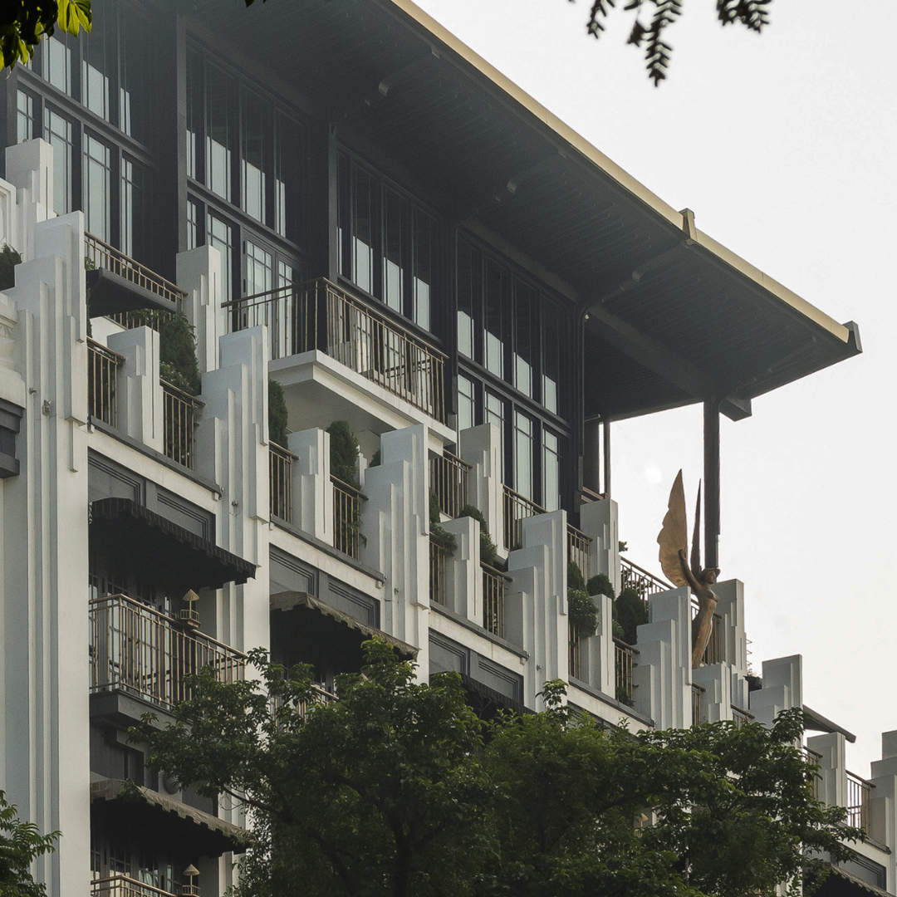
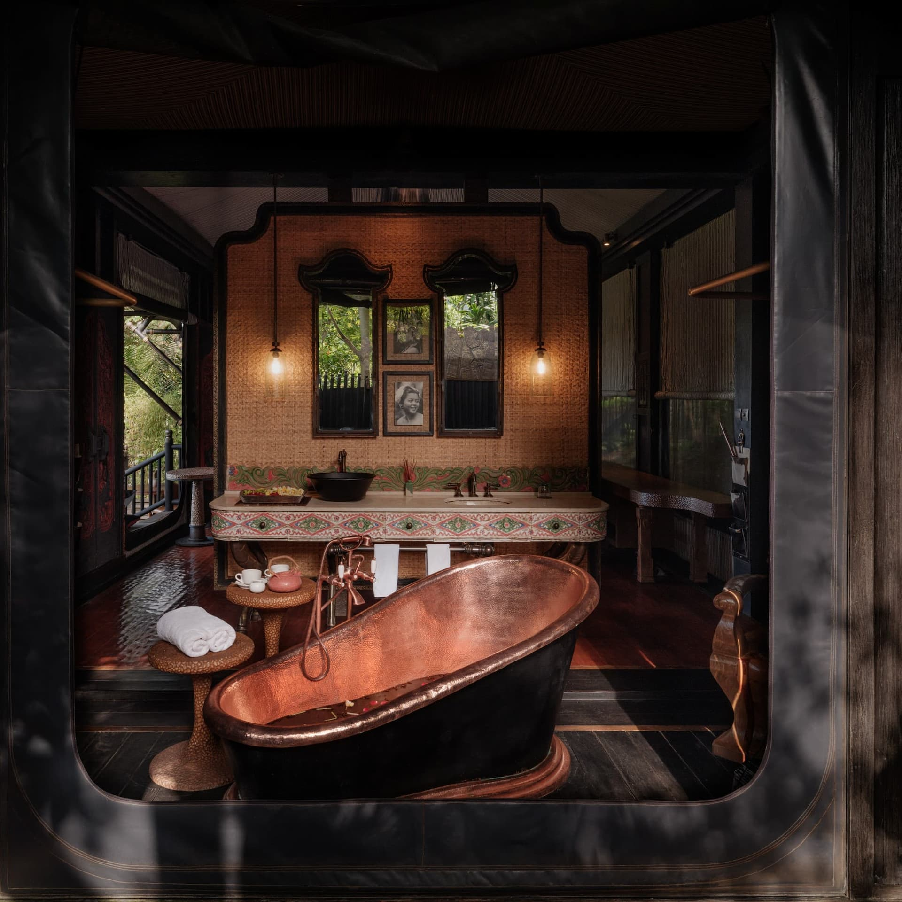

Los Cimientos
El visionario arquitecto Edward Blackwood diseña The Gilded Manor como una obra maestra de la arquitectura victoriana.

La Era Dorada
Durante los años 20, The Gilded Manor se convierte en el epicentro de la alta sociedad y el glamour.

Renovación y Modernización
Una cuidadosa renovación preserva la elegancia histórica mientras incorpora comodidades modernas.
Expansión Global
The Gilded Manor establece su reputación internacional como símbolo de lujo y exclusividad.

Legado Contemporáneo
Hoy, The Gilded Manor continúa su tradición de excelencia, fusionando historia y lujo moderno.
